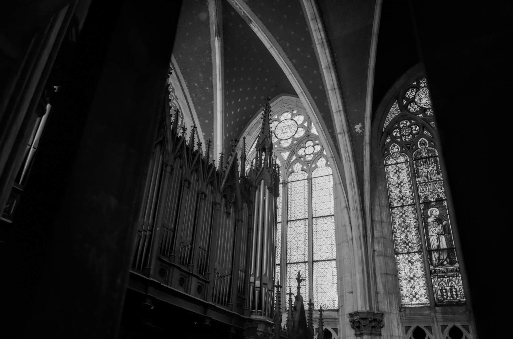
Galerie
Images
choisies.
13 photographies
Nancy & Lorraine
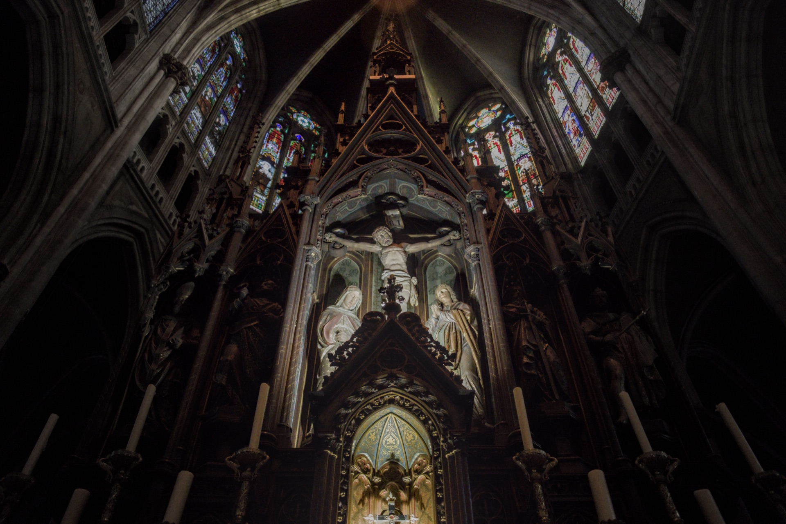
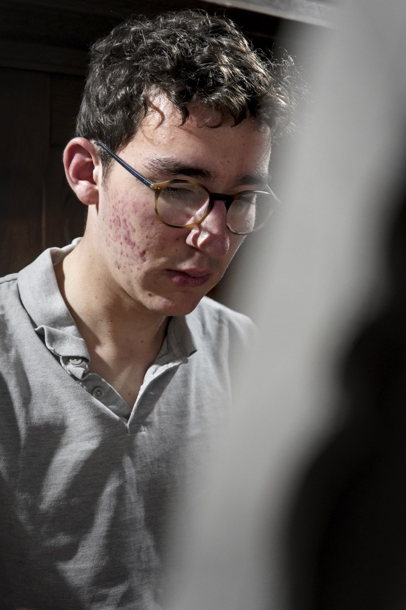
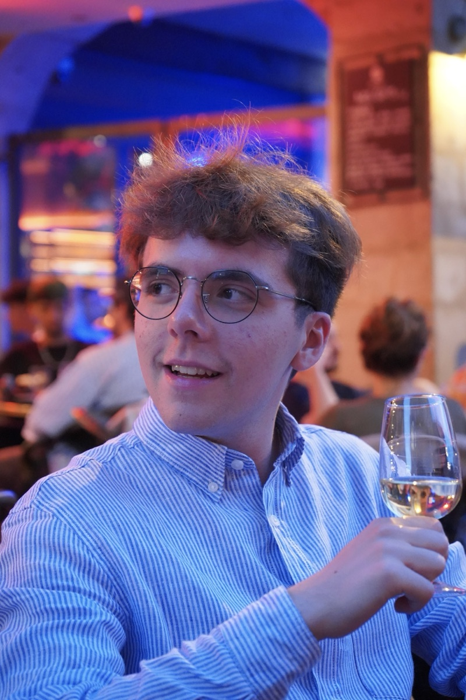
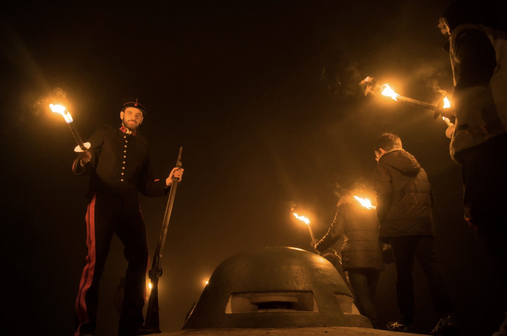
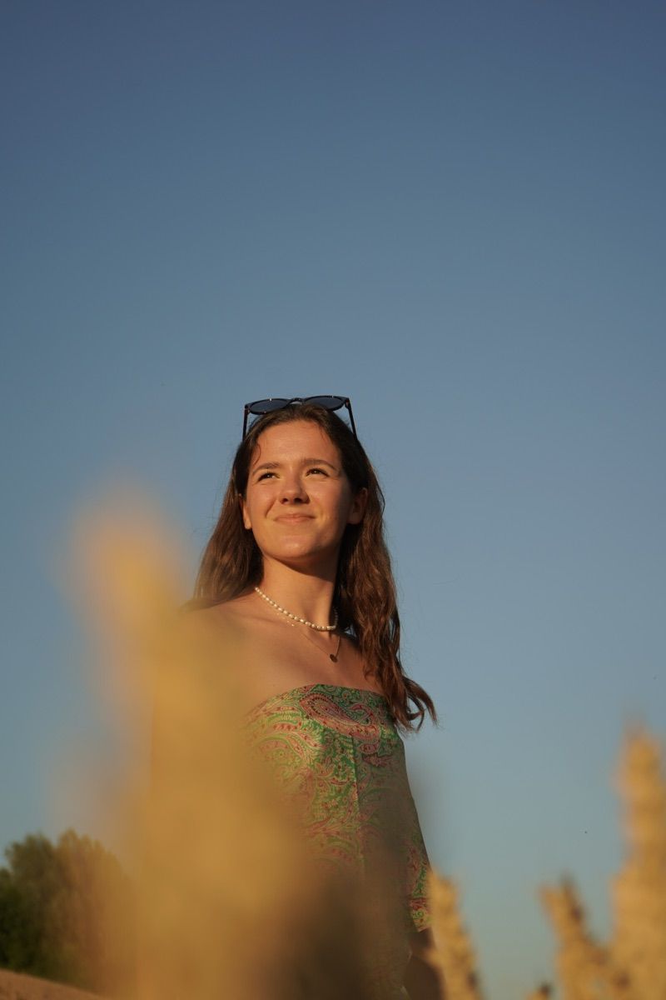
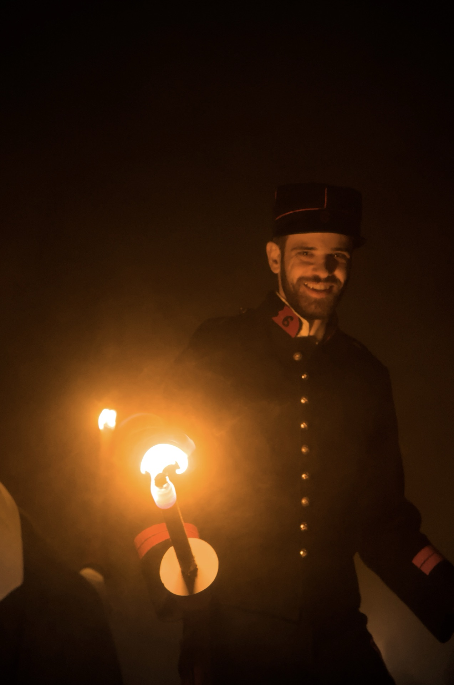
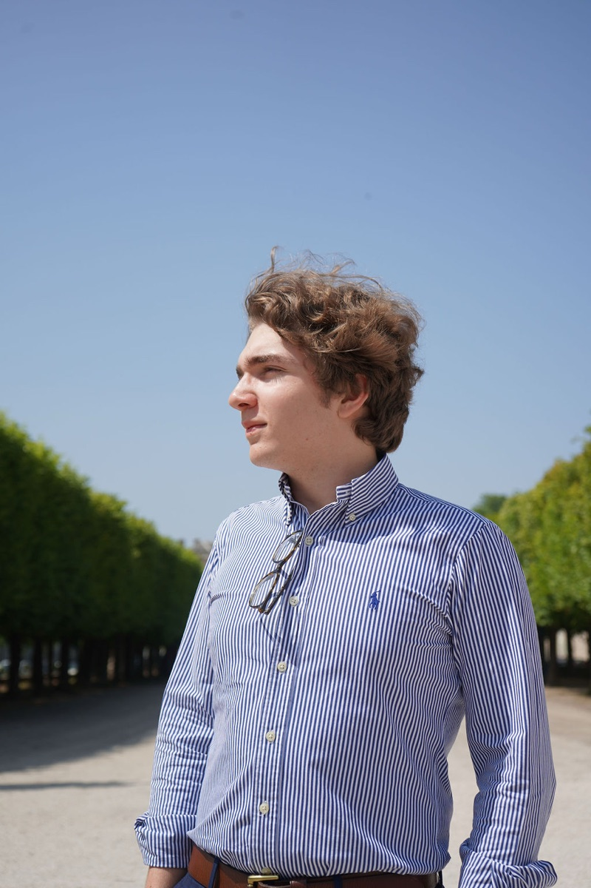
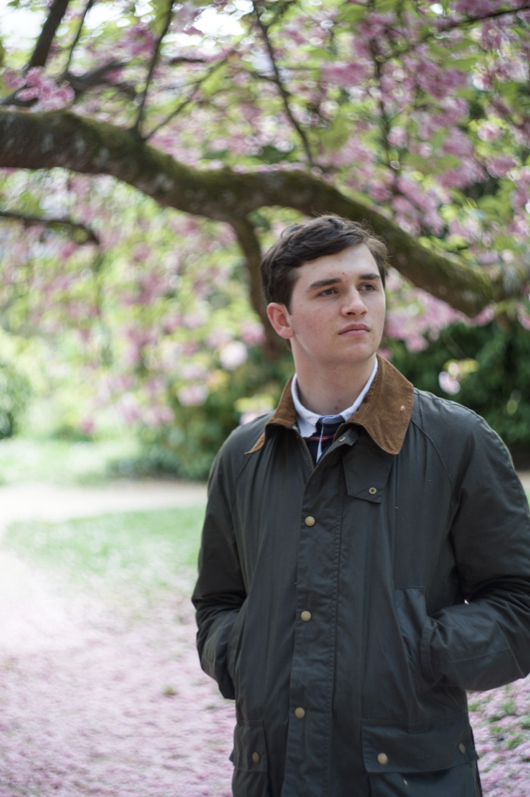
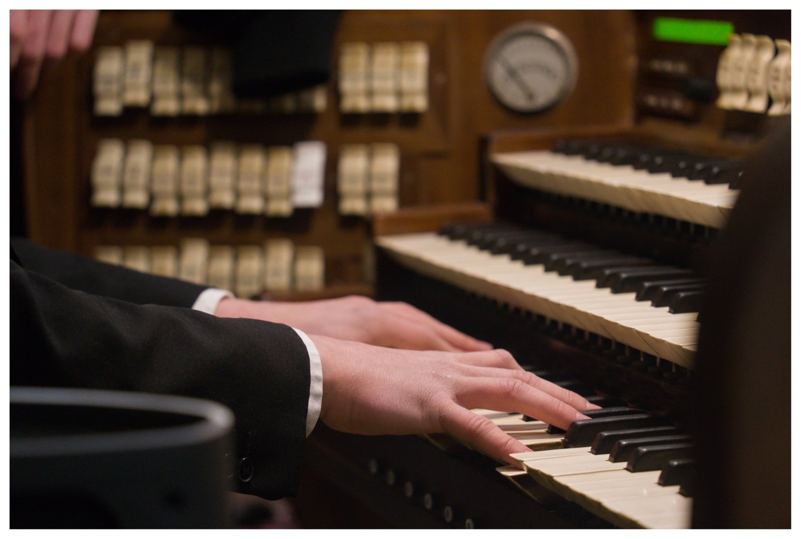
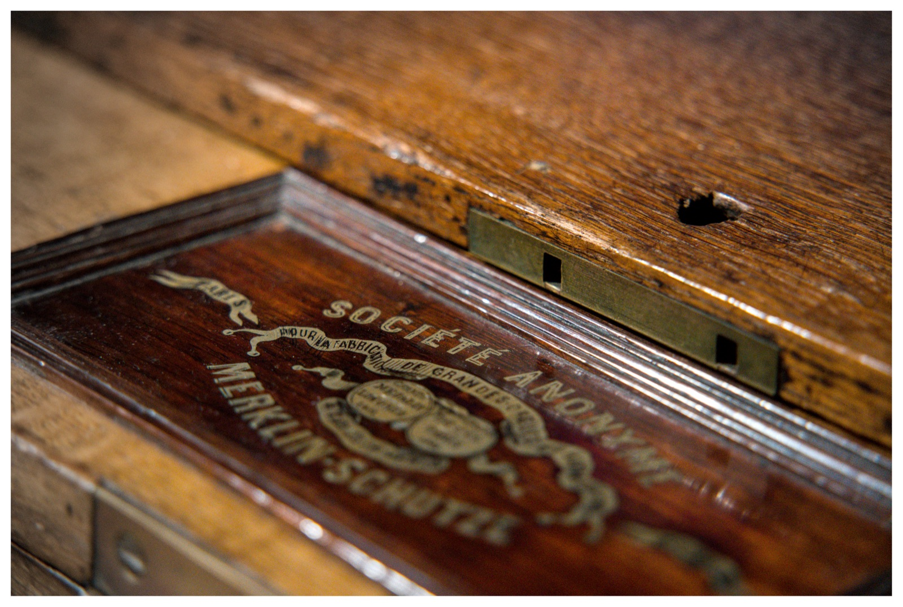
Galerie complète
Plus de 200 photos
disponibles en ligne.
Téléchargement disponible avec le code 5593
Collaboration
Un projet à documenter ?